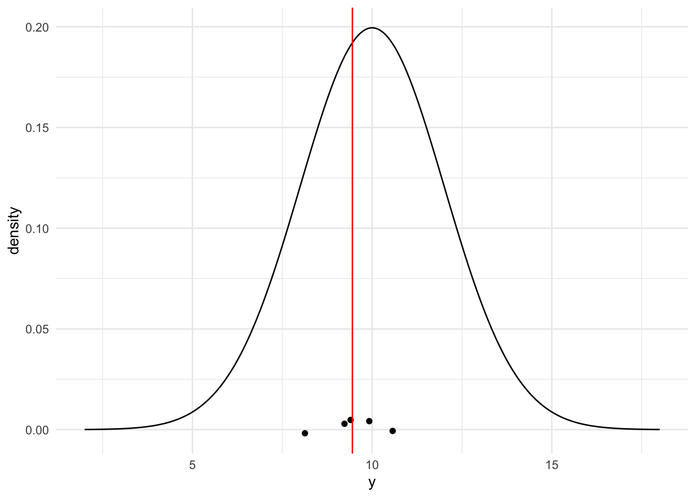
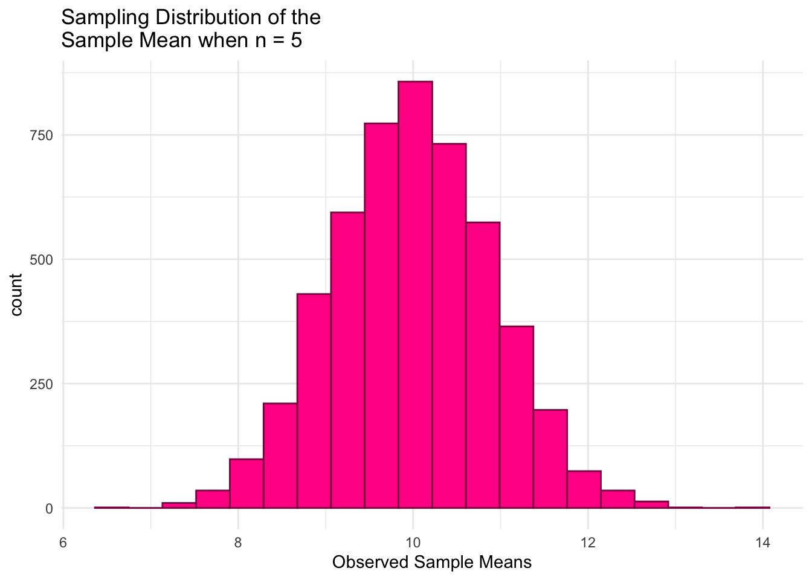

The purpose of this section is to investigate sampling distributions through statistical simulation.
Goals:
Given a population model for the simulation, construct the sampling distribution of any sample statistic (sample mean, sample median, sample maximum, etc.).
Explain how a change in sample size affects the center and spread of a sampling distribution.
Match properties of the simulated sampling distribution of the sample mean to the theoretical sampling distribution of the sample mean from MATH/STAT 325.
Lab 1.1: Introduction to Simulating a Sampling Distribution
Starting a Simulation
To begin a simulation for a sampling distribution of a sample statistic, we need to choose:
a population model for the simulation. Let’s start with Normal(\(\mu\) = 10, \(\sigma^2\) = 4).
a sample size for the simulation. Let’s start with \(n\) = 5.
a calculation for the sample statistic that we are constructing the sampling distribution of. Let’s start with the sample mean, \(\bar{y}\).
Generating a Single Sample Statistic
Carefully look through this code and output to understand the process of generating a single sample from a population and computing a statistic.
In the code below, we simulate five observations from a normal population with mean 10 and standard deviation 2. Note that, when you run the code, you should get a different set of 5 numbers than the ones printed below: it is a random sample, after all!
n <-5# sample sizemu <-10# population meansigma <-2# population standard deviation# generate a random sample of n observations from a normal populationsingle_sample <-rnorm(n, mu, sigma) |>round(2)# look at the samplesingle_sample
[1] 9.92 10.57 8.13 9.40 9.23
Next, we compute the sample mean from this sample: this is our sample statistic we are interested in.
# compute the sample meansample_mean <-mean(single_sample)# look at the sample meansample_mean
[1] 9.45
Again, your sample mean should be different!
Finally, we can make a plot of our single sample, along with where the sample mean lies.
library(tidyverse)# generate a range of values that span the populationplot_df <-tibble(xvals =seq(mu -4* sigma, mu +4* sigma, length.out =500)) |>mutate(xvals_density =dnorm(xvals, mu, sigma))## plot the population model density curveggplot(data = plot_df, aes(x = xvals, y = xvals_density)) +geom_line() +theme_minimal() +## add the sample points from your samplegeom_jitter(data =tibble(single_sample), aes(x = single_sample, y =0),width =0, height =0.005) +## add a line for the sample meangeom_vline(xintercept = sample_mean, colour ="red") +labs(x ="y", y ="density")

Constructing the Sampling Distribution
To simulate the sampling distribution of the sample mean from a normal population with \(\mu\) = 10 and \(\sigma\) = 2 for a sample size of 5, we need to repeat the above steps many, many, many times. We can do so by
Writing a function that computes the sample mean and then
Mapping through that function a large number of times and then
Plotting the large number of sample means to examine the characteristics of the resulting distribution.
First, let’s write the function that will compute the sample mean with a given sample size from a normal population model with a given mean and standard deviation.
n <-5# sample sizemu <-10# population meansigma <-2# population standard deviationgenerate_samp_mean <-function(mu, sigma, n) { single_sample <-rnorm(n, mu, sigma) sample_mean <-mean(single_sample)return(sample_mean)}## test function once:generate_samp_mean(mu = mu, sigma = sigma, n = n)
[1] 10.23156
Next, to generate 5000 sample means, we map through the function:
nsim <-5000# number of simulations## code to map through the function. ## the \(i) syntax says to just repeat the generate_samp_mean function## nsim timesmeans <-map_dbl(1:nsim, \(i) generate_samp_mean(mu = mu, sigma = sigma, n = n))## print some of the 5000 means## each number represents the sample mean from __one__ sample.means_df <-tibble(means)means_df
Finally, we plot the 5000 sample means to see what our sampling distribution of the sample mean (for a sample size of 5) looks like.
ggplot(data = means_df, aes(x = means)) +geom_histogram(colour ="deeppink4", fill ="deeppink1", bins =20) +theme_minimal() +labs(x ="Observed Sample Means",title =paste("Sampling Distribution of the \nSample Mean when n =", n))

We can also obtain some summary statistics of the sampling distribution of the sample mean when \(n\) = 5:
And, we can even obtain estimates of the probability that we observe a sample mean larger than 11 by calculating the proportion of our observed sample means that are larger than 11. We can use a similar strategy to estimate the probability that we observe a sample mean less than or equal to 9.5.
# What is the probability that we observe a sample mean larger than 11?means_df |>mutate(more_than_11 =if_else(means >11,true =1, false =0)) |>summarise(prob_more_than_11 =mean(more_than_11))
# A tibble: 1 × 1
prob_more_than_11
<dbl>
1 0.135
# What is the probability that we observe a sample mean less than or equal to 9.5?means_df |>mutate(less_9.5 =if_else(means <=9.5,true =1, false =0)) |>summarise(prob_less_9.5 =mean(less_9.5))
# A tibble: 1 × 1
prob_less_9.5
<dbl>
1 0.297
Exercises
Exercise 1. Repeat the construction of the sampling distribution of the sample mean several times. How do the results change (or not)?
Exercise 2. Use the result from Stat 325 to report the theoretical distribution of the sample mean. Use this result to find \(P(\bar{Y}\leq 9.5)\) and \(P(\bar{Y}>11)\) analytically.
Exercise 3. What can we conclude about the sampling distribution of \(\bar{y}\) when taking samples of \(n = 5\) from this population? How do the simulation results compare to the result from Stat 325? Use the plot below in your answer to this question.
theoretical_df <-tibble(xvals =seq(mu -4* sigma /sqrt(n), mu +4* sigma /sqrt(n),length.out =500)) |>mutate(xvals_density =dnorm(xvals, mu, sigma /sqrt(n)))ggplot(data = means_df, aes(x = means)) +geom_histogram(colour ="deeppink4", fill ="deeppink1", bins =20,aes(y =after_stat(density))) +theme_minimal() +labs(x ="Observed Sample Means",title =paste("Sampling Distribution of the \nSample Mean when n =", n)) +geom_line(data = theoretical_df, aes(x = xvals, y = xvals_density))
Exercise 4. Increase the sample size to 50 and then reconstruct the sampling distribution of the sample mean for \(n = 50\). How do the results (mean, standard deviation, and probabilities) change? Do the changes make sense and do they match the theoretical result from Stat 325?
Lab 1.2: Sampling Distribution for a non-Normal Population
Consider a non-Normal population
Now consider an Exponential(0.5) population. Go back to a sample size of \(n=5\) and continue calculating the sample mean, \(\bar{y}\).
In CHUNK4, I modified the CHUNK1 code to do all of the same things as CHUNK1 (examine a single sample from the known population), but for an Exponential population. What are some changes I made and why?
n =5# sample sizelambda =0.5mu =1/lambda # population meansigma =sqrt(1/lambda^2) # population standard deviation# generate a random sample of n observations from populationmy.sample =round(rexp(n, lambda),2) # look at the samplemy.sample
[1] 1.13 3.96 0.15 0.72 1.15
# compute the sample meanmy.mean =mean(my.sample)# look at the sample meanmy.mean
[1] 1.422
## visualize all of the above simultaneously# generate a range of values that span the populationxvals =seq(0,4.5*sigma, by=0.1) # plot the normal density curve over the above range plot(xvals, dexp(xvals, lambda), type="l",xlab="Y",ylab="Exponential(lambda=0.5)")# plot the n sample pointspoints(my.sample,rep(0,n), pch=19)# plot the sample meanabline(v=my.mean,col="red", lwd=2)
Run CHUNK5 (below) to explore the sampling distribution of \(\bar{y}\) when the population is Exponential and the sample size is \(n=5\). Summarize what you notice about the sampling distribution of \(\bar{y}\) when taking a sample of size \(n=5\) from an Exponential(0.5) population.
n =5# sample sizelambda =0.5mu =1/lambda # population meansigma =sqrt(1/lambda^2) # population standard deviation# the following code allocates space to save the results for each of our simulated valuesmy.means =numeric(nsim) for (i in1:nsim) # loop through the iterations in the simulation{ my.sample =round(rexp(n, lambda), 2) my.means[i] =mean(my.sample) }# summarize the simulation resultshist(my.means, main=paste("Sampling Distribution of the \n Sample Mean when n =",n),freq=FALSE,xlab="Observed Sample Means")
mean(my.means)
[1] 1.990633
var(my.means)
[1] 0.8031888
sd(my.means)
[1] 0.896208
Increase the sample size in CHUNK5 to \(n=50\). What do you notice about the sampling distribution of \(\bar{y}\) now? What is this called?
In general, what are some other ways you could summarize a sample of data? (i.e., other calculations you could do?)
Lab 1.3: Sampling Distribution of the Sample Minimum
Use simulation to explore the sampling distribution of the sample minimum
Let’s return to our original Normal(\(\mu\)=10, \(\sigma^2\)=4), but consider a different statistic (this time the sample minimum).
Copy CHUNK1 and paste it below (rename it CHUNK6). Change the statistic calculated to be the sample minimum. Run CHUNK6 a few times so that you understand our problem.
PREDICT WHAT MIGHT HAPPEN NEXT: Based on what you’ve seen by rerunning CHUNK6. Where do you expect the center of the sampling distribution of the sample minimum to be relative to 10?
Copy CHUNK2 and paste it below (rename it CHUNK7). Change the statistic calculated to be the sample minimum. Run CHUNK7 to explore the sampling distribution of the sample minimum.
Summarize what you notice about the sampling distribution. How does it compare to the sampling distribution of the sample mean? Does that make sense? Why or why not?
Report the probability that the sample minimum is less than or equal to 9.5. How does it compare to the probability that the sample mean is less than or equal to 9.5? Does that make sense? Why or why not?
Increase the sample size to 50. Summarize how the sampling distribution of the sample minimum when \(n=50\) differs from when \(n=5\).